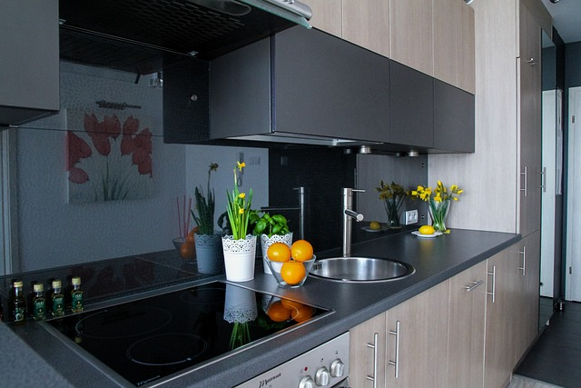

주방 정리에 도움되는 작은 팁들
1. 냄비나 프라이팬등을 보관할때 세로로 눕혀서 보관하자: 공간을 절약 할 수 있다. 꺼내기 불편하다면 바구니 같은걸 사서 거기 세로로 담아두자.
2. 접시를 정리할때 정리대를 애용하자: 접시도 세로로 세워서 보관하면 공간 절약에 도움이 된다.
3. 반찬통의 부피를 줄이자: 반찬통의 뚜껑과 통 부분을 분리해 쌀아두면 반찬통 자체를 쌀아두는 것보다 공간을 절약 할 수 있다.
4. 동선을 고려해 물품들을 배치하자: 자주 필요한 조리도구들을 오고가기 좋은 장소에 두면 동선 낭비를 줄일 수 있다.
5. 호일, 비닐 랩, 키친 타올등은 서랍장 문에 달아두자.